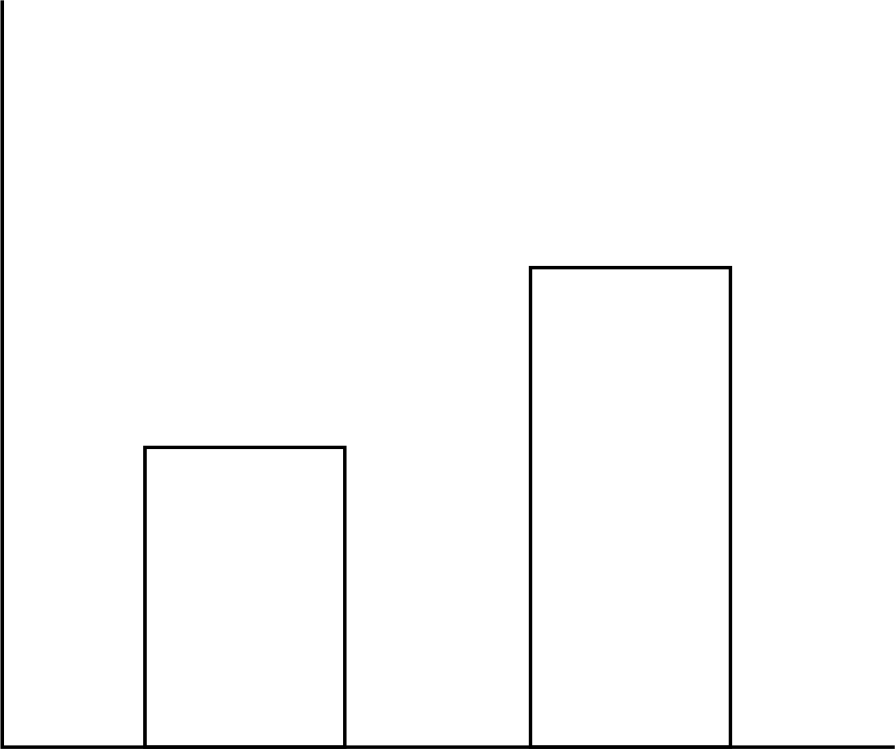

<!DOCTYPE html>
<html>

<head>
    <title>My experiment</title>
    <script src="jsPsych/jspsych.js"></script>
    <script src="jsPsych/plugin-html-button-response.js"></script>
    <script src="jsPsych/plugin-html-keyboard-response.js"></script>
    <script src="jsPsych/assignment-inference_imageAC.js"></script>
    <script src="jsPsych/plugin-fullscreen.js"></script>
    <script src="jsPsych/plugin-survey-text.js"></script>
    <script src="jsPsych/plugin-survey-multi-select.js"></script>
    <script src="https://unpkg.com/@jspsych/plugin-image-keyboard-response@1.1.3"></script>
    <script src="https://unpkg.com/@jspsych/plugin-preload@1.1.3"></script>
    <script src="https://unpkg.com/@jspsych-contrib/plugin-pipe"></script>


    <link href="jsPsych/jspsychMAS.css" rel="stylesheet" type="text/css">
</head>

<body></body>
<script>
    async function startExperiment() {
        //Start jsPsych Experiment!!!

        function generateDirectionalPairs(pairs) {
            const combinations = [];
            for (let i = 0; i < pairs.length; i++) {
                for (let j = i + 1; j < pairs.length; j++) {
                    combinations.push({ left: pairs[i], right: pairs[j] });
                    combinations.push({ left: pairs[j], right: pairs[i] });
                }
            }
            return combinations;
        }


        //Initiate jsPsych
        var jsPsych = initJsPsych({
            on_finish: function () {
                // Save data locally as CSV
                jsPsych.data.get().localSave('csv', 'experiment_data.csv');
            }
        });

        const sona_id = jsPsych.data.getURLVariable('id');

        // Add it to every trial's data
        jsPsych.data.addProperties({
            sona_id: sona_id
        });

        /*
        var subject_id = jsPsych.data.getURLVariable('PROLIFIC_PID');
        var study_id = jsPsych.data.getURLVariable('STUDY_ID');
        var session_id = jsPsych.data.getURLVariable('SESSION_ID');
    
        jsPsych.data.addProperties({
            subject_id: subject_id,
            study_id: study_id,
            session_id: session_id
        });
        */

        //Create timeline
        let timeline = [];


        //const condition_num = await jsPsychPipe.getCondition("rCYVwVfTK2SF");

        const condition_num = 0; //Default condition for one group


        //correct for data pipe
        const texture_cond = {
            "0": ['NBT_53_bars/D48.png', 'NBT_53_bars/D46.png', 'NBT_53_bars/D83.png', 'NBT_53_bars/D47.png',
                'NBT_53_bars/D37.png', 'NBT_53_bars/D111.png', 'NBT_53_bars/D11.png', 'NBT_53_bars/D84.png'],

            "1": ['NBT_53_bars/D77.png', 'NBT_53_bars/D4.png', 'NBT_53_bars/D94.png', 'NBT_53_bars/D51.png',
                'NBT_53_bars/D19.png', 'NBT_53_bars/D87.png', 'NBT_53_bars/D46.png', 'NBT_53_bars/D92.png']
        };

        const concept_cond = {
            "0": ["field", "ocean"],
            "1": ["lightning", "sandstorm"]
        };

        concept_list = concept_cond[condition_num];
        concept_list = jsPsych.randomization.shuffle(concept_list);

        texture_list = texture_cond[condition_num];

        // Set background color to gray //
        document.body.style.backgroundColor = "rgb(128,128,128)"

        // Preload (if you have images, add them here)
        const preload = {
            type: jsPsychPreload,
            images: [
                'img/instructions_graph.png',
                'NBT_53_bars/D48.png',
                'NBT_53_bars/D46.png',
                'NBT_53_bars/D83.png',
                'NBT_53_bars/D47.png',
                'NBT_53_bars/D37.png',
                'NBT_53_bars/D111.png',
                'NBT_53_bars/D11.png',
                'NBT_53_bars/D84.png',
                'NBT_53_bars/D77.png',
                'NBT_53_bars/D4.png',
                'NBT_53_bars/D94.png',
                'NBT_53_bars/D51.png',
                'NBT_53_bars/D19.png',
                'NBT_53_bars/D87.png',
                'NBT_53_bars/D46.png',
                'NBT_53_bars/D92.png'
            ]
        };
        timeline.push(preload);

        //var participant_id = jsPsych.data.getURLVariable('participant_id') || Math.floor(Math.random() * 10000);
        //const filename = `participant_${participant_id}.csv`;

        var participant_id = jsPsych.randomization.randomID(10);
        const filename = `${participant_id}.csv`;

        // Initial welcome screen
        var initial_screen = {
            type: jsPsychHtmlButtonResponse,
            stimulus: 'Welcome to our experiment!' +
                '<p> This experiment involves two parts: demographic information, followed by the experimental task.' +
                '<p>At the bottom of this screen, you will see a button that says "Begin Experiment".' +
                '<br>Please only click that button when you are ready to complete the 30 minute experiment in one sitting.</p>' +
                '<p> Once you click that button, it will not be possible to restart the experiment.',
            choices: ['Begin Experiment']
        }
        timeline.push(initial_screen);

        timeline.push({
            type: jsPsychFullscreen,
            fullscreen_mode: true,
        })

        //Consent signing
        var consentSign = {
            type: jsPsychSurveyMultiSelect,
            questions: [
                {
                    prompt:
                        "  <strong>UNIVERSITY OF WISCONSIN-MADISON</strong>" +
                        "  <br><strong>Research Participant Information and Consent Form</strong>" +
                        " <br><br><strong>Title of the Study:</strong> Investigating how observers perceive, interpret, and evaluate visual features in 2D scenes and 3D environments" +
                        " <br><br><strong>Principal Investigator:</strong> Karen B. Schloss (phone: 608-316-4495) (email: kschloss@wisc.edu)" +
                        "  <br><br><strong><u>DESCRIPTION OF THE RESEARCH</u></strong>" +
                        "  <br>You are invited to participate in a research study about how visual features influence the ability to perceive, interpret, navigate, and remember information in visual displays" +
                        "  <br><br>You have been asked to participate because you saw a description of the study and signed up to be a participant." +
                        "  <br><br>The purpose of the research is to understand principles by which people perceive, evaluate and interpret visual information (e.g., the meaning of parts of a scientific diagram)." +
                        "  <br><br>This study will include adults from UW-Madison and nearby areas who volunteer to participate." +
                        "  <br><br>The research will be conducted online, with no requirement to appear in person." +
                        "  <br><br><strong><u>WHAT WILL MY PARTICIPATION INVOLVE?</u></strong>" +
                        "  <br>If you decide to participate in this research you will be presented with visual displays containing images and/or text and will be asked to make judgments about them. For example, you may see shapes and be asked how round they appear or view a graph with a legend and interpret information about the data in the graph." +
                        "  <br><br>You will be asked to respond by making button presses on a keyboard/mouse. You may be asked to complete questionnaires about your expertise or educational level in a given domain (e.g., neuroscience) and questionnaires about what sorts of things you like/dislike. Finally, you may be asked to respond to questions about your experience during the experiment (e.g., how much you enjoyed the task)." +
                        "  <br><br>You will be asked to complete 2-6 surveys or tasks." +
                        "  <br><br>Your participation will last approximately 30-60 minutes per session (as specified when you signed up to participate) and will require 1 session (30 to 60 min total)." +
                        "  <br><br><strong><u>ARE THERE ANY RISKS TO ME?</u></strong>" +
                        "  <br>We don't anticipate any risks to you from participating in this study." +
                        "  <br><br><strong><u>ARE THERE ANY BENEFITS TO ME?</u></strong>" +
                        "  <br>There are no direct benefits for participating in this study." +
                        "  <br><br><strong><u>WILL I BE COMPENSATED FOR MY PARTICIPATION?</u></strong>" +
                        "  <br>Consistent with PSY 202/210/225 policies, you will receive 1 extra credit point/30 minutes of study participation. At the end of the semester, those extra credit points are converted such that 1 point of extra credit = 0.33% added directly to your grade at the end of term. Consult your class syllabus for additional details regarding the application of extra credit points to your final grade." +
                        "  <br><br><strong><u>HOW WILL MY CONFIDENTIALITY BE PROTECTED?</u></strong>" +
                        "  <br>While there will probably be publications as a result of this study, your name will not be used. Typically, group characteristics will be published, but datasets with individual responses may also be shared. In such cases, the data will not be linked to your name or other identifiable information." +
                        "  <br><br><strong><u>WHOM SHOULD I CONTACT IF I HAVE QUESTIONS?</u></strong>" +
                        "  <br>You may ask any questions about the research at any time. If you have questions about the research you can contact the Principal Investigator Karen B. Schloss at 608-316-4495." +
                        "  <br><br>If you are not satisfied with response of research team, have more questions, or want to talk with someone about your rights as a research participant, you should contact the Education and Social/Behavioral Science IRB Office at 608-263-2320." +
                        "  <br><br>Your participation is completely voluntary. If you decide not to participate or to withdraw from the study you may do so without penalty." +
                        "  <br><br>By clicking the box below, you confirm that you have read this consent form, had an opportunity to ask any questions about your participation in this research and voluntarily consent to participate. You may print a copy of this form for your records." +
                        "  <br><br>Please click the box below next to the text 'I consent' to give your informed consent to participate. " +
                        "   </p>",
                    options: ["<strong>I consent</strong>"],
                    horizontal: false,
                    required: true,
                    name: 'Consent'
                },
            ],
            button_label: "Start Experiment",
        };
        timeline.push(consentSign);

        // Demographic questions
        var age_lang_demo = {
            type: jsPsychSurveyText,
            questions: [
                { prompt: "Age", name: 'Age', rows: "1", columns: "3", required: true, },
                { prompt: "Gender", name: 'Gender', rows: "1", columns: "15", required: true, },
                { prompt: "Race/ethnicity", name: 'Race/ethnicity', rows: "1", columns: "30", required: true, },
                { prompt: "List all languages you know", name: "Languages", rows: "6", columns: "60", required: true, }
            ],
            preamble: "Please answer the following questions.",
            button_label: "Done",
            randomize_question_order: false
        }
        timeline.push(age_lang_demo);

        // Consent and demo Completion
        var demo_completion = {
            type: jsPsychHtmlButtonResponse,
            stimulus: "<p>Great job!</p> You have completed the consent process and answered the demographic questions." +
                "<p> Click the button to continue to the experimental task. </p>",
            choices: ['Continue']
        };

        timeline.push(demo_completion);


        //Instructions for the experiment
        var instructions = {
            type: jsPsychHtmlButtonResponse,
            stimulus: `
                <div style=text-align:left;>
                <p>In this experiment you will be asked to imagine you are interpreting bar graphs representing data about the concepts, <b>${concept_list[0]}</b> and <b>${concept_list[1]}</b>.</p> 
                <p>On each trial there will be text at the top of the screen indicating the target concept to judge (<b>${concept_list[0]}</b> or <b>${concept_list[1]}</b>).</p> 
                <p>Below, there will be a chart with two bars, like the one below. Your task is to report which data point you think represents the target concept (<b>${concept_list[0]}</b> or <b>${concept_list[1]}</b>).</p> 
                <p>The bars will not be labeled, so please use your intuition about which bar represents the target concept (<b>${concept_list[0]}</b> or <b>${concept_list[1]}</b>).</p> 
                <p style='text-align:center; font-weight:bold;'>[TARGET CONCEPT]</p> 
                </img> 
                <p>If you think the LEFT bar represents the target concept, press the LEFT ARROW KEY.</p> 
                <p>If you think the RIGHT bar represents the target concept, press the RIGHT ARROW KEY.</p> 
                <p>After you respond there will be a pause and then the next trial will begin.</p> 
                <p>The experiment will take about 30 minutes, and there will be 6 blocks of trials. You will be notified when you have completed each block. Press 'Continue' when you are ready to begin.<br></p> 
                </div>
                `,
            choices: ['Continue']
        };
        timeline.push(instructions);


        // heights
        var heights = {
            "short": [100, 100],
            "tall": [150, 150]
        };

        //all ordered color pairs (no repeats)
        function getTexturePairs(textures) {
            var pairs = [];
            for (var i = 0; i < textures.length; i++) {
                for (var j = 0; j < textures.length; j++) {
                    if (i !== j) {
                        pairs.push([textures[i], textures[j]]);
                    }
                }
            }
            return pairs; // e.g., [ [red, blue], [blue, red], ... ]
        }

        //all height pairs (no repeats/duplicates)
        function getHeightPairs(heights) {
            var keys = Object.keys(heights);
            var pairs = [];
            for (var i = 0; i < keys.length; i++) {
                for (var j = 0; j < keys.length; j++) {
                    if (i !== j) {
                        pairs.push([keys[i], keys[j]]);
                    }
                }
            }
            return pairs;
        }

        var texture_pairs = getTexturePairs(texture_list);
        var height_pairs = getHeightPairs(heights);

        // Function to randomly pick an element from array
        function sample(arr) {
            return arr[Math.floor(Math.random() * arr.length)];
        }

        // Number of trials
        //var n_trials = 5;

        // Number of repetitions per concept
        //var n_reps = 2; // you can adjust

        // Shuffle the concept-side combos
        //concept_side_combos = jsPsych.randomization.shuffle(concept_side_combos);

        // Create trial
        var trials = [];
        concept_list.forEach(function (concept) {
            texture_pairs.forEach(function (texture_pairs) {
                height_pairs.forEach(function (height_pairs) {
                    trials.push({
                        prompt: concept,
                        left_image: texture_pairs[0],
                        right_image: texture_pairs[1],
                        left_bar_height: heights[height_pairs[0]],
                        right_bar_height: heights[height_pairs[1]]
                    });
                });
            });
        });
        console.log(trials[0]);
        console.log(trials.length);
        console.log(trials);

        var assign_trial = {
            type: jsPsychBarImageChoice,
            prompt: jsPsych.timelineVariable('prompt'),
            left_height_range: jsPsych.timelineVariable('left_bar_height'),
            right_height_range: jsPsych.timelineVariable('right_bar_height'),
            left_image: jsPsych.timelineVariable('left_image'),
            right_image: jsPsych.timelineVariable('right_image'),
            jitter: 5,
            bg_color: "rgb(128,128,128)",
            choices: ['arrowleft', 'arrowright'],
            response_ends_trial: true
        };

        var iti = {
            type: jsPsychHtmlKeyboardResponse,
            stimulus: '<div style="font-size: 40px;">+</div>',   // blank screen
            choices: "NO_KEYS",  // no responses allowed
            trial_duration: 500
        };

        const totalReps = 3;          // hidden repetitions
        const blocksPerRep = 2;       // each repetition split into 2 blocks
        const totalBlocks = totalReps * blocksPerRep;

        let blockCounter = 1;         // global block counter for messages

        for (let rep = 1; rep <= totalReps; rep++) {

            // Shuffle trials for this repetition
            let shuffledTrials = jsPsych.randomization.shuffle([...trials]);

            // Split into 2 blocks
            let half = Math.ceil(shuffledTrials.length / 2);
            let firstHalf = shuffledTrials.slice(0, half);
            let secondHalf = shuffledTrials.slice(half);

            // Add first block
            timeline.push({
                timeline: [iti, assign_trial],
                timeline_variables: firstHalf.map(t => ({ ...t })),
                randomize_order: true
            });

            // Break message after first block
            if (blockCounter < totalBlocks) {
                timeline.push({
                    type: jsPsychHtmlButtonResponse,
                    stimulus: `<p>You have completed block ${blockCounter} of ${totalBlocks}.</p>
                <p>Take a short break if needed, then click below to continue.</p>`,
                    choices: ['Continue']
                });
            }
            blockCounter++;

            // Add second block
            timeline.push({
                timeline: [iti, assign_trial],
                timeline_variables: secondHalf.map(t => ({ ...t })),
                randomize_order: true
            });

            // Break message after second block
            if (blockCounter < totalBlocks) {
                timeline.push({
                    type: jsPsychHtmlButtonResponse,
                    stimulus: `<p>You have completed block ${blockCounter} of ${totalBlocks}.</p>
                <p>Take a short break if needed, then click below to continue.</p>`,
                    choices: ['Continue']
                });
            }
            blockCounter++;
        }


        // Compute total number of assign trials added to the timeline and log it
        let totalAssignTrials = 0;
        for (let i = 0; i < timeline.length; i++) {
            if (timeline[i].timeline_variables && Array.isArray(timeline[i].timeline_variables)) {
                totalAssignTrials += timeline[i].timeline_variables.length;
            }
        }
        console.log("Total assign trials in experiment:", totalAssignTrials);

        console.log("Participant ID:", participant_id);
        console.log("Assigned condition number:", condition_num);
        console.log("Assigned concepts:", concept_list);

        //Exit fullscreen
        timeline.push({
            type: jsPsychFullscreen,
            fullscreen_mode: false
        })

        //save the data
        const save_data = {
            type: jsPsychPipe,
            action: "save",
            experiment_id: "rCYVwVfTK2SF",
            filename: filename,
            wait_message: "Please wait while the next page loads.",
            data_string: () => jsPsych.data.get().csv()
        };
        timeline.push(save_data);

        var debrief_script = {
            type: jsPsychHtmlKeyboardResponse,
            stimulus: '<div style="width:800px">Great job! You have finished the experiment.' +
                '<p>The goal of this experiment is to investigate what factors influence the way people interpret the meanings of textures. In a series of trials, you indicated which textured bars best correspond to concepts from a given list.</p>' +
                '<p>We are interested in understanding how the textures used in the bars affect which concepts people assign to each bar.</p>' +
                '<p>Thank you for participating! Your credit will be updated on Sona within a few days.</p>' +
                '<p>You may press the "esc" key to end the experiment and exit full screen.</p>' +
                '</div>',
            choices: ['NO_KEYS']
        }
        timeline.push(debrief_script);

        console.log("Timeline contents:", timeline);

        //Run the experiment
        //jsPsych.run(timeline);
        jsPsych.run(timeline).then(() => {
            if (sona_id) {
                window.location.href = `https://uwmadison.sona-systems.com/webstudy_credit.aspx?experiment_id=1652&cc=${sona_id}`;
            }
        });
    }
    startExperiment();

</script>

</html>